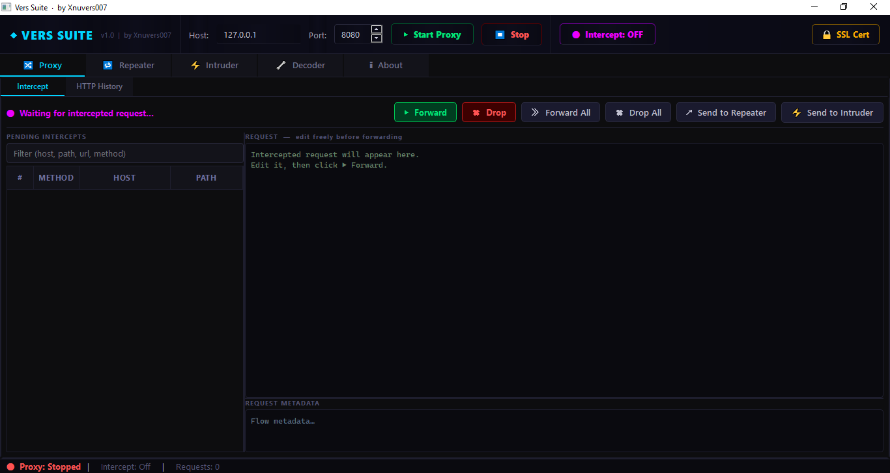
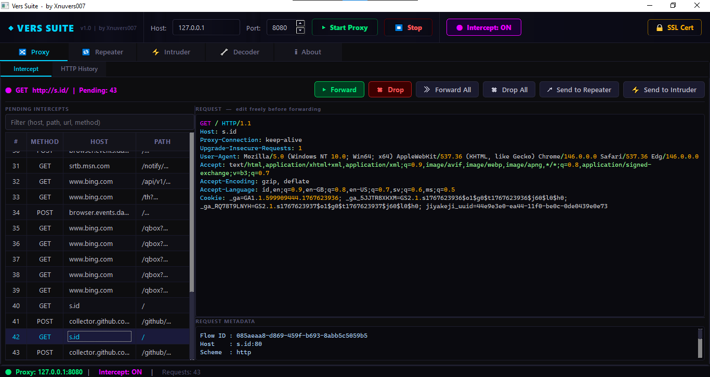
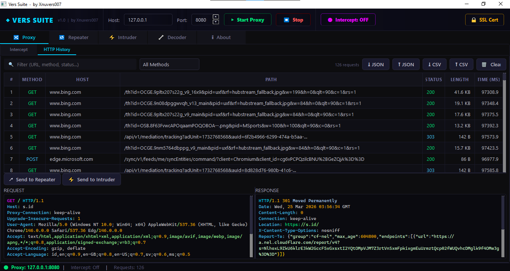
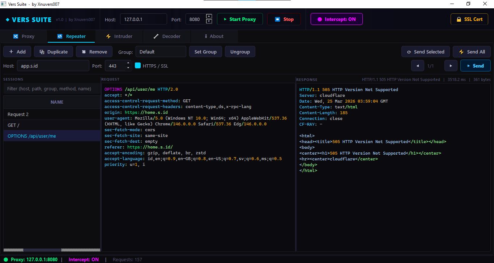
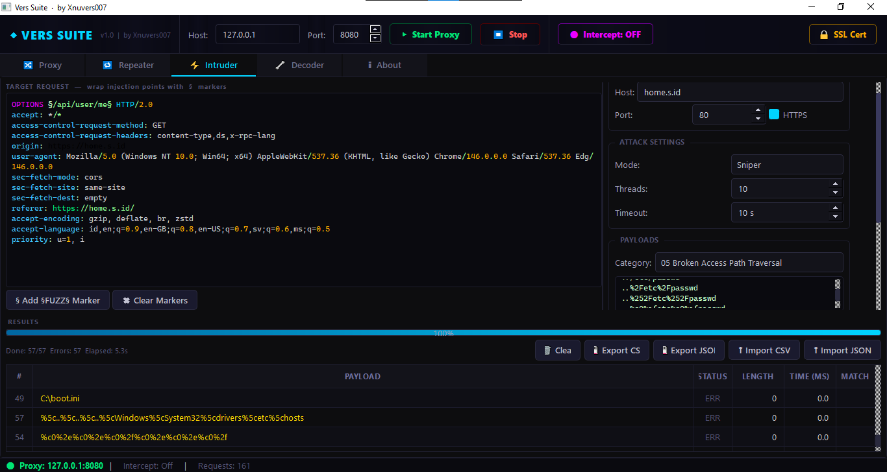
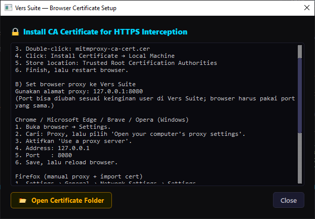

Intercept Proxy
Tahan, edit, forward, drop, forward all, dan drop all request HTTP/HTTPS secara realtime.
Terjemahan otomatis tambahan (opsional):
Professional Security Toolkit
Platform desktop untuk authorized web security testing dengan Intercept Proxy, HTTP History, Repeater, Intruder, SSL cert setup, serta analisis metadata keamanan dalam satu antarmuka profesional.
Ramah aksesibilitas: keyboard friendly, kontras tinggi, dukungan reduce motion, dan struktur konten yang jelas.
Fitur utama Vers Suite untuk workflow pengujian keamanan web yang cepat dan terstruktur.
Tahan, edit, forward, drop, forward all, dan drop all request HTTP/HTTPS secara realtime.
List traffic lengkap dengan filter cepat, context menu, dan integrasi kirim ke Repeater/Intruder.
Replay request manual dengan grouping/ungrouping dan manajemen sesi yang efisien.
Payload fuzzing multithread untuk pengujian endpoint, parameter, dan response behavior.
Deteksi WAF, indikasi Cloudflare, server headers, IP target, dan security headers.
Panduan instalasi sertifikat untuk Chrome, Edge, Brave, Opera, Firefox, dan Safari.
Sesuai arsitektur proyek Vers Suite saat ini.
requirements.txt.python main.py.Pilih script sesuai terminal Anda, lalu klik tombol Copy Script.
git clone https://github.com/Xnuvers007/verssuite.git
cd verssuite
python -m venv venv
.\venv\Scripts\Activate.ps1
pip install -r requirements.txt
python main.py
deactivategit clone https://github.com/Xnuvers007/verssuite.git
cd verssuite
python -m venv venv
venv\Scripts\activate.bat
pip install -r requirements.txt
python main.py
deactivate
:: alternatif:
venv\Scripts\deactivate.batgit clone https://github.com/Xnuvers007/verssuite.git
cd verssuite
python3 -m venv venv
source venv/bin/activate
# Git Bash di Windows bisa juga:
# source venv/Scripts/activate
pip install -r requirements.txt
python main.py
deactivatePertama, di aplikasi Vers Suite tekan tombol SSL Cert untuk membuka tutorial detail yang selalu sesuai host/port aktif Anda.
127.0.0.1, Port: sesuai konfigurasi Vers Suite.127.0.0.1:PORT (PORT dari Vers Suite).127.0.0.1:PORT sesuai aplikasi.127.0.0.1 dan Port sesuai Vers Suite.127.0.0.1:PORT.Monitor dan kontrol request dengan mode intercept ON/OFF, queue management, metadata panel, dan aksi massal.
Kirim request dari history ke repeater, ubah payload secara manual, lalu analisis response dengan cepat.
Jalankan payload injection terstruktur berbasis kategori untuk fuzzing endpoint dan analisis pola status code.
Klik screenshot untuk tampilan full screen. Gunakan panah kiri/kanan atau keyboard.






Informasi penting tidak bergantung pada audio. Semua interaksi utama berbasis teks, ikon, dan struktur visual jelas.
Tidak ada fitur yang mewajibkan input suara. Navigasi dan aksi lengkap bisa dilakukan lewat mouse, keyboard, atau touch.
Support keyboard navigation, focus state jelas, tombol aksesibilitas, serta mode reduce motion untuk kenyamanan visual.
Tidak. Port bebas sesuai kebutuhan user. Pastikan browser/proxy client menggunakan host dan port yang sama dengan konfigurasi Vers Suite.
Periksa sertifikat CA sudah trusted, browser sudah restart, dan proxy sedang aktif pada host/port yang benar.
Tool ini ditujukan untuk environment testing berizin, audit internal, dan pembelajaran keamanan aplikasi web.